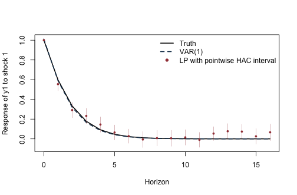
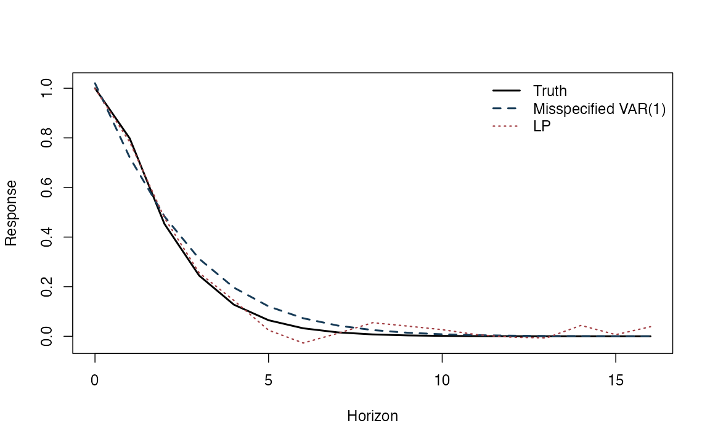
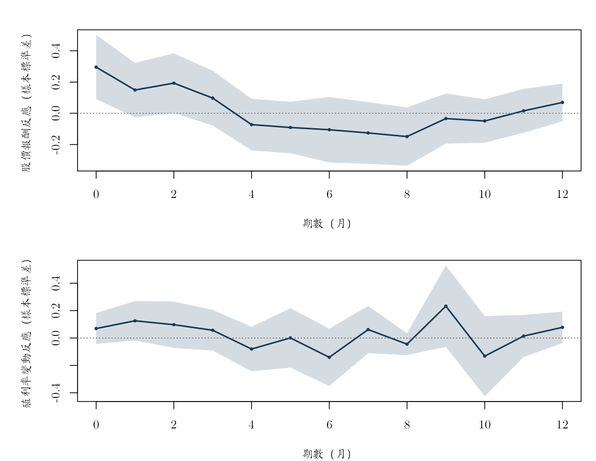
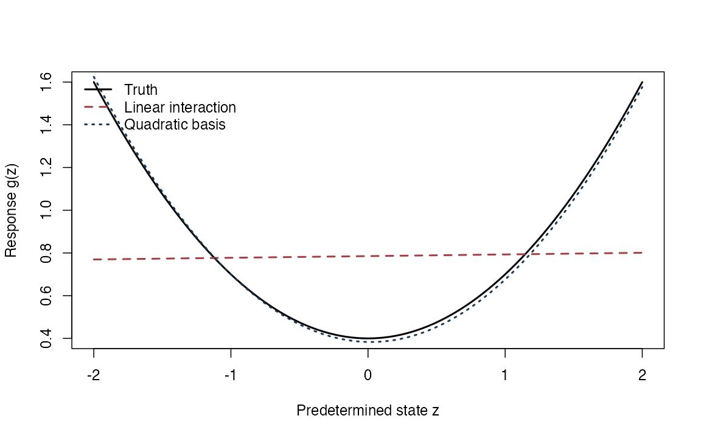

《財務時間序列分析》線上附錄
R18：VAR、局部投影與進階 IRF
本附錄對應選讀第 23 章。前半以已知且可觀察的外生衝擊建立教學模擬，比較 VAR 與局部投影（LP）IRF，並示範 HAC 標準誤。接著使用固定日本月資料，估計油價變動創新與股價報酬、十年期殖利率變動的縮減式條件反應。最後提供 DML/AIPW 評分函數與狀態相依性的小型核對例；不宣稱重現專案中三篇 2024--2026 年論文。
執行條件#
- base R 與
knitr；不安裝套件、不下載資料。 - 模擬使用固定種子；實證使用
data/processed/japan_monthly_2007_2018.csv。 - 模擬衝擊的識別由資料生成過程明示；日本資料只有落後資訊條件下的油價變動創新，沒有外生結構衝擊的識別。
knitr::opts_chunk$set(
echo = TRUE, message = FALSE, warning = FALSE,
fig.width = 7, fig.height = 4.6
)
set.seed(20260716)
模擬結構 VAR 與可觀察衝擊#
simulate_svarma <- function(Tn, A, B, C = matrix(0, nrow(B), ncol(B)),
burn = 300L) {
K <- nrow(A)
eps <- matrix(rnorm((Tn + burn) * K), ncol = K)
Y <- matrix(0, Tn + burn, K)
for (t in 2:nrow(Y)) {
Y[t, ] <- A %*% Y[t - 1, ] + B %*% eps[t, ] + C %*% eps[t - 1, ]
}
keep <- (burn + 1L):(burn + Tn)
list(Y = Y[keep, , drop = FALSE], shock = eps[keep, 1], eps = eps[keep, ])
}
true_irf <- function(A, B, C, horizon) {
out <- vector("list", horizon + 1L)
out[[1]] <- B
if (horizon >= 1L) out[[2]] <- A %*% B + C
if (horizon >= 2L) {
for (h in 2:horizon) out[[h + 1L]] <- A %*% out[[h]]
}
out
}
extract_response <- function(irf_list, response = 1L, shock = 1L) {
vapply(irf_list, function(M) M[response, shock], numeric(1))
}
A <- matrix(c(0.55, 0.12,
-0.10, 0.35), 2, 2, byrow = TRUE)
B <- matrix(c(1.00, 0.00,
0.40, 0.75), 2, 2, byrow = TRUE)
C0 <- matrix(0, 2, 2)
H <- 16L
sim <- simulate_svarma(900, A, B, C0)
Y <- sim$Y
shock <- sim$shock
colnames(Y) <- c("y1", "y2")
truth <- extract_response(true_irf(A, B, C0, H), 1, 1)
LP 與 Newey--West covariance#
對每個 horizon (h)，估
\[ y_{1,t+h}=a_h+\theta_hs_t+\Gamma_h'W_{t-1}+u_{t+h}^{(h)}, \]
其中控制變數是 \((Y_{t-1},\ldots,Y_{t-p})\)。衝擊在模擬中直接觀察且與創新項獨立，所以 \(\theta_h\) 有明確的因果 IRF 待估對象。
newey_west_vcov <- function(X, residuals, bandwidth) {
score <- X * as.numeric(residuals)
meat <- crossprod(score)
n <- nrow(score)
if (bandwidth > 0L) {
for (lag in seq_len(min(bandwidth, n - 1L))) {
weight <- 1 - lag / (bandwidth + 1)
gamma <- crossprod(score[(lag + 1L):n, , drop = FALSE],
score[1:(n - lag), , drop = FALSE])
meat <- meat + weight * (gamma + t(gamma))
}
}
bread <- solve(crossprod(X))
bread %*% meat %*% bread
}
estimate_lp <- function(Y, shock, horizon_max = 12L, p = 2L,
bandwidth_rule = function(h) max(h, 4L)) {
Y <- as.matrix(Y)
if (is.null(colnames(Y))) colnames(Y) <- paste0("y", seq_len(ncol(Y)))
Tn <- nrow(Y)
out <- data.frame(h = 0:horizon_max, theta = NA_real_, se_hac = NA_real_,
n = NA_integer_, bandwidth = NA_integer_)
for (h in 0:horizon_max) {
t_index <- (p + 1L):(Tn - h)
y_h <- Y[t_index + h, 1]
controls <- do.call(cbind, lapply(seq_len(p), function(lag) {
Y[t_index - lag, , drop = FALSE]
}))
colnames(controls) <- unlist(lapply(seq_len(p), function(lag) {
paste0(colnames(Y), "_L", lag)
}))
X <- cbind(Intercept = 1, Shock = shock[t_index], controls)
fit <- lm.fit(X, y_h)
L <- bandwidth_rule(h)
V <- newey_west_vcov(X, fit$residuals, L)
out[h + 1L, c("theta", "se_hac", "n", "bandwidth")] <-
c(fit$coefficients["Shock"], sqrt(V["Shock", "Shock"]), length(y_h), L)
}
out
}
lp <- estimate_lp(Y, shock, H, p = 2)
head(lp)
## h theta se_hac n bandwidth
## 1 0 1.00000000 7.837684e-18 898 4
## 2 1 0.55460214 3.363868e-02 897 4
## 3 2 0.29132998 3.888439e-02 896 4
## 4 3 0.23219743 3.904792e-02 895 4
## 5 4 0.14518145 3.905648e-02 894 4
## 6 5 0.06446433 3.843893e-02 893 5
VAR IRF#
fit_var1 <- function(Y) {
Y <- as.matrix(Y)
X <- cbind(Intercept = 1, Y[-nrow(Y), , drop = FALSE])
Ydep <- Y[-1, , drop = FALSE]
coef <- qr.solve(X, Ydep)
residuals <- Ydep - X %*% coef
list(
intercept = coef[1, ],
A = t(coef[-1, , drop = FALSE]),
sigma = crossprod(residuals) / nrow(residuals),
residuals = residuals
)
}
var1_irf <- function(fit, horizon) {
B_hat <- t(chol(fit$sigma))
out <- vector("list", horizon + 1L)
out[[1]] <- B_hat
if (horizon >= 1L) {
for (h in seq_len(horizon)) out[[h + 1L]] <- fit$A %*% out[[h]]
}
out
}
fit_v <- fit_var1(Y)
var_estimate <- extract_response(var1_irf(fit_v, H), 1, 1)
ylim <- range(truth, var_estimate,
lp$theta - 1.96 * lp$se_hac,
lp$theta + 1.96 * lp$se_hac)
plot(0:H, truth, type = "l", lwd = 2, col = "black", ylim = ylim,
xlab = "Horizon", ylab = "Response of y1 to shock 1")
lines(0:H, var_estimate, lwd = 2, lty = 2, col = "#173B57")
points(0:H, lp$theta, pch = 16, cex = 0.7, col = "#A34045")
segments(0:H, lp$theta - 1.96 * lp$se_hac,
0:H, lp$theta + 1.96 * lp$se_hac,
col = adjustcolor("#A34045", alpha.f = 0.45))
legend("topright", c("Truth", "VAR(1)", "LP with pointwise HAC interval"),
col = c("black", "#173B57", "#A34045"),
lty = c(1, 2, NA), pch = c(NA, NA, 16), lwd = c(2, 2, NA), bty = "n")

在正確且簡約的 VAR 資料生成過程下，VAR 遞迴通常利用較多跨預測期距限制；LP 點估計可能較不平滑。單次圖不能比較涵蓋率，需重複模擬。
小型蒙地卡羅實驗：偏誤與標準差#
monte_carlo <- function(repetitions = 100L, Tn = 350L, horizon = 8L,
C = matrix(0, 2, 2), seed = 20260716) {
set.seed(seed)
lp_draw <- var_draw <- matrix(NA_real_, repetitions, horizon + 1L)
for (r in seq_len(repetitions)) {
s <- simulate_svarma(Tn, A, B, C)
lp_draw[r, ] <- estimate_lp(s$Y, s$shock, horizon, p = 2)$theta
var_draw[r, ] <- extract_response(var1_irf(fit_var1(s$Y), horizon), 1, 1)
}
target <- extract_response(true_irf(A, B, C, horizon), 1, 1)
data.frame(
h = 0:horizon,
truth = target,
lp_bias = colMeans(lp_draw) - target,
lp_sd = apply(lp_draw, 2, sd),
var_bias = colMeans(var_draw) - target,
var_sd = apply(var_draw, 2, sd)
)
}
mc_correct <- monte_carlo(repetitions = 80, Tn = 350, horizon = 8, C = C0)
round(mc_correct, 3)
## h truth lp_bias lp_sd var_bias var_sd
## 1 0 1.000 0.000 0.000 0.000 0.038
## 2 1 0.598 -0.015 0.051 -0.016 0.051
## 3 2 0.334 -0.012 0.065 -0.016 0.051
## 4 3 0.178 -0.019 0.067 -0.012 0.043
## 5 4 0.092 -0.023 0.070 -0.007 0.032
## 6 5 0.046 -0.016 0.073 -0.004 0.022
## 7 6 0.023 -0.020 0.078 -0.002 0.015
## 8 7 0.011 -0.007 0.060 0.000 0.009
## 9 8 0.005 -0.013 0.067 0.000 0.006
有限次蒙地卡羅實驗是方法的壓力測試，不是理論證明。增加重複次數可降低模擬雜訊，但會增加編譯時間。
局部 MA 動態錯設的教學壓力測試#
加入小型 \(C\varepsilon_{t-1}\) 後，資料不再是精確 VAR(1)。真實當期反應為 \(B\)，一期反應為 \(AB+C\)，之後由 \(A\) 傳遞。
C_small <- 0.20 * B
sim_ma <- simulate_svarma(900, A, B, C_small)
truth_ma <- extract_response(true_irf(A, B, C_small, H), 1, 1)
lp_ma <- estimate_lp(sim_ma$Y, sim_ma$shock, H, p = 2)
var_ma <- extract_response(var1_irf(fit_var1(sim_ma$Y), H), 1, 1)
plot(0:H, truth_ma, type = "l", lwd = 2, col = "black",
ylim = range(truth_ma, lp_ma$theta, var_ma),
xlab = "Horizon", ylab = "Response")
lines(0:H, var_ma, lwd = 2, lty = 2, col = "#173B57")
lines(0:H, lp_ma$theta, lwd = 1.5, lty = 3, col = "#A34045")
legend("topright", c("Truth", "Misspecified VAR(1)", "LP"),
col = c("black", "#173B57", "#A34045"),
lwd = c(2, 2, 1.5), lty = c(1, 2, 3), bty = "n")

mc_ma <- monte_carlo(repetitions = 80, Tn = 350, horizon = 8, C = C_small)
round(mc_ma, 3)
## h truth lp_bias lp_sd var_bias var_sd
## 1 0 1.000 0.000 0.001 0.009 0.039
## 2 1 0.798 -0.016 0.051 -0.101 0.047
## 3 2 0.453 -0.015 0.071 0.002 0.053
## 4 3 0.245 -0.022 0.076 0.040 0.052
## 5 4 0.128 -0.027 0.079 0.045 0.046
## 6 5 0.065 -0.021 0.082 0.036 0.038
## 7 6 0.032 -0.023 0.088 0.026 0.030
## 8 7 0.016 -0.011 0.070 0.017 0.023
## 9 8 0.008 -0.014 0.073 0.010 0.017
這個資料生成過程只是可核對的小例，不能被描述成供應 PDF 的重現，也不能用來證明 LP 對所有錯誤設定都有正確涵蓋率。
頻寬敏感度#
lp_Lh <- estimate_lp(Y, shock, H, p = 2,
bandwidth_rule = function(h) max(h, 1L))
lp_L4 <- estimate_lp(Y, shock, H, p = 2,
bandwidth_rule = function(h) 4L)
lp_L12 <- estimate_lp(Y, shock, H, p = 2,
bandwidth_rule = function(h) 12L)
data.frame(
h = 0:H,
se_Lh = lp_Lh$se_hac,
se_L4 = lp_L4$se_hac,
se_L12 = lp_L12$se_hac
)
## h se_Lh se_L4 se_L12
## 1 0 8.662842e-18 7.837684e-18 7.628143e-18
## 2 1 3.415455e-02 3.363868e-02 3.150262e-02
## 3 2 3.790702e-02 3.888439e-02 3.928026e-02
## 4 3 3.889454e-02 3.904792e-02 3.872784e-02
## 5 4 3.905648e-02 3.905648e-02 3.758108e-02
## 6 5 3.843893e-02 3.898045e-02 3.804920e-02
## 7 6 3.607567e-02 3.617650e-02 3.613303e-02
## 8 7 4.080768e-02 3.948255e-02 4.045087e-02
## 9 8 4.020096e-02 3.930276e-02 4.008037e-02
## 10 9 4.102776e-02 4.072232e-02 4.109628e-02
## 11 10 3.931643e-02 3.995293e-02 3.851908e-02
## 12 11 3.799919e-02 3.988689e-02 3.753522e-02
## 13 12 3.504898e-02 3.903523e-02 3.504898e-02
## 14 13 3.919067e-02 4.001536e-02 3.928509e-02
## 15 14 3.678129e-02 3.934185e-02 3.713329e-02
## 16 15 3.976508e-02 4.144410e-02 4.049851e-02
## 17 16 4.244003e-02 4.264808e-02 4.244836e-02
HAC 頻寬是推論設定的一部分。若累積應變數寫成 \(y_{t+h}-y_{t-1}\)，相鄰觀察的重疊窗會使機械相依延伸至落後第 \(h\) 階；若寫成 \(y_{t+h}-y_t\)，才延伸至第 \(h-1\) 階。本例的應變數是未來水準 \(y_{t+h}\)，不是這兩種累積量，但仍可能因動態控制變數與預測誤差而有序列相關。
日本月資料：縮減式 LP 的資料界線#
凍結檔由原課程的 data_t.csv 與 yield_10.csv 依月份鍵結後整理。原始說明把 opi 定義為 WTI 現貨價，opi_change 是相對前月的百分比變動；yield_10_change 是十年期殖利率相對前月的百分比變動，殖利率接近零時會出現極端比率；return_j 是資料內預先計算的日本股價報酬，但原始說明沒有保留它的精確公式與明確單位。資料夾也沒有完整記錄所有供應者。因此，本節只分析固定課程快照，不把數值與其他資料庫直接拼接。
來源檔有 133 個月（2007 年 10 月至 2018 年 10 月）。三個變動欄位的第一個月皆缺值；先按日期排序，再對三欄共同刪除不完整列，得到 132 個月（2007 年 11 月至 2018 年 10 月）。為避免未記錄的原始尺度主導迴歸，三欄都以這 132 月的平均數與標準差標準化。因此實證反應的單位是「應變數的樣本標準差」，油價創新正規化為油價月變動的 1 個樣本標準差。
jp_path <- "data/processed/japan_monthly_2007_2018.csv"
jp <- read.csv(jp_path, stringsAsFactors = FALSE)
jp$date <- as.Date(jp$date)
jp <- jp[order(jp$date), ]
required <- c("date", "opi_change", "return_j", "yield_10_change")
stopifnot(all(required %in% names(jp)), !anyDuplicated(jp$date))
raw_names <- c("opi_change", "return_j", "yield_10_change")
keep <- complete.cases(jp[, raw_names])
Z_raw <- as.matrix(jp[keep, raw_names])
dates_jp <- jp$date[keep]
Z_jp <- scale(Z_raw)
colnames(Z_jp) <- c("OilChange", "StockReturn", "YieldChange")
data.frame(
source_rows = nrow(jp), complete_rows = nrow(Z_jp),
source_start = min(jp$date), source_end = max(jp$date),
analysis_start = min(dates_jp), analysis_end = max(dates_jp),
duplicate_dates = anyDuplicated(jp$date)
)
## source_rows complete_rows source_start source_end analysis_start analysis_end
## 1 133 132 2007-10-01 2018-10-01 2007-11-01 2018-10-01
## duplicate_dates
## 1 0
data.frame(
variable = raw_names,
missing = vapply(jp[raw_names], function(x) sum(is.na(x)), integer(1)),
mean = colMeans(Z_raw), sd = apply(Z_raw, 2, sd),
min = apply(Z_raw, 2, min), max = apply(Z_raw, 2, max)
)
## variable missing mean sd min
## opi_change opi_change 1 0.26249300 8.920919 -28.58635
## return_j return_j 1 0.01708592 2.224311 -10.76673
## yield_10_change yield_10_change 1 4.32846014 57.760973 -168.42105
## max
## opi_change 23.845646
## return_j 4.284162
## yield_10_change 500.000000
含落後控制的實證 LP#
基準式對每個 \(h=0,\ldots,12\) 估計
\[ z_{t+h}=a_h+\theta_h o_t+\sum_{\ell=1}^{2}\Gamma_{h\ell}' (o_{t-\ell},r_{t-\ell},q_{t-\ell})'+u_{t+h}^{(h)}, \]
其中 \(o_t\) 是標準化油價月變動、\(r_t\) 是標準化股價報酬、\(q_t\) 是標準化殖利率變動。依 Frisch--Waugh--Lovell 定理，\(\theta_h\) 等於先把 \(o_t\) 對同一組落後控制殘差化後的係數，所以可稱為「落後資訊條件下的油價變動創新反應」。基準 HAC 頻寬為 \(\max(h,4)\)，區間是逐點 95% 區間。
lag_controls <- function(system, index, p) {
controls <- do.call(cbind, lapply(seq_len(p), function(lag) {
system[index - lag, , drop = FALSE]
}))
colnames(controls) <- unlist(lapply(seq_len(p), function(lag) {
paste0(colnames(system), "_L", lag)
}))
controls
}
estimate_reduced_lp <- function(system, response_name,
shock_name = "OilChange",
horizon_max = 12L, p = 2L,
bandwidth_rule = function(h) max(h, 4L)) {
system <- as.matrix(system)
Tn <- nrow(system)
response_col <- match(response_name, colnames(system))
shock_col <- match(shock_name, colnames(system))
stopifnot(!is.na(response_col), !is.na(shock_col), p >= 1L)
out <- data.frame(
response = response_name, h = 0:horizon_max,
theta = NA_real_, se_hac = NA_real_, lower = NA_real_, upper = NA_real_,
n = NA_integer_, bandwidth = NA_integer_, p_lags = p
)
for (h in 0:horizon_max) {
index <- (p + 1L):(Tn - h)
y_h <- system[index + h, response_col]
controls <- lag_controls(system, index, p)
X <- cbind(Intercept = 1,
OilInnovation = system[index, shock_col],
controls)
fit <- lm.fit(X, y_h)
stopifnot(fit$rank == ncol(X))
L <- as.integer(bandwidth_rule(h))
V <- newey_west_vcov(X, fit$residuals, L)
theta <- fit$coefficients["OilInnovation"]
se <- sqrt(V["OilInnovation", "OilInnovation"])
out[h + 1L, c("theta", "se_hac", "lower", "upper", "n", "bandwidth")] <-
c(theta, se, theta - 1.96 * se, theta + 1.96 * se,
length(y_h), L)
}
out
}
H_emp <- 12L
p_emp <- 2L
lp_stock <- estimate_reduced_lp(
Z_jp, "StockReturn", horizon_max = H_emp, p = p_emp
)
lp_yield <- estimate_reduced_lp(
Z_jp, "YieldChange", horizon_max = H_emp, p = p_emp
)
lp_empirical <- rbind(lp_stock, lp_yield)
lp_empirical[lp_empirical$h %in% c(0, 1, 3, 6, 12), ]
## response h theta se_hac lower upper n bandwidth
## 1 StockReturn 0 0.29567788 0.10485752 0.09015714 0.50119862 130 4
## 2 StockReturn 1 0.14900496 0.08898050 -0.02539683 0.32340674 129 4
## 4 StockReturn 3 0.09724640 0.08935338 -0.07788623 0.27237902 127 4
## 7 StockReturn 6 -0.10528774 0.10699751 -0.31500286 0.10442738 124 6
## 13 StockReturn 12 0.06940062 0.06159401 -0.05132363 0.19012487 118 12
## 14 YieldChange 0 0.06935053 0.05741645 -0.04318570 0.18188676 130 4
## 15 YieldChange 1 0.12574058 0.07349346 -0.01830660 0.26978777 129 4
## 17 YieldChange 3 0.05681455 0.07564610 -0.09145181 0.20508092 127 4
## 20 YieldChange 6 -0.14082395 0.10689945 -0.35034688 0.06869897 124 6
## 26 YieldChange 12 0.07794831 0.05849429 -0.03670051 0.19259712 118 12
## p_lags
## 1 2
## 2 2
## 4 2
## 7 2
## 13 2
## 14 2
## 15 2
## 17 2
## 20 2
## 26 2
# 列出逐點 95% 區間未涵蓋零的 horizon；未校正多重比較。
pointwise_nonzero <- lp_empirical[
lp_empirical$lower > 0 | lp_empirical$upper < 0,
c("response", "h", "theta", "se_hac", "lower", "upper")
]
pointwise_nonzero
## response h theta se_hac lower upper
## 1 StockReturn 0 0.2956779 0.10485752 0.090157141 0.5011986
## 3 StockReturn 2 0.1930352 0.09718402 0.002554493 0.3835158
# 油價月變動的可預測部分與條件創新尺度。
innovation_index <- (p_emp + 1L):nrow(Z_jp)
innovation_X <- cbind(
Intercept = 1,
lag_controls(Z_jp, innovation_index, p_emp)
)
innovation_fit <- lm.fit(innovation_X, Z_jp[innovation_index, "OilChange"])
innovation_r2 <- 1 - sum(innovation_fit$residuals^2) /
sum((Z_jp[innovation_index, "OilChange"] -
mean(Z_jp[innovation_index, "OilChange"]))^2)
c(p_lags = p_emp, innovation_R2 = innovation_r2,
innovation_residual_sd = sd(innovation_fit$residuals))
## p_lags innovation_R2 innovation_residual_sd
## 2.0000000 0.1408325 0.9295058
par(mfrow = c(2, 1), mar = c(4, 4.5, 2, 1))
for (object in list(lp_stock, lp_yield)) {
response_label <- if (object$response[1] == "StockReturn") {
"Stock return response (SD)"
} else {
"Yield-change response (SD)"
}
plot(object$h, object$theta, type = "n",
ylim = range(object$lower, object$upper),
xlab = "Horizon (months)",
ylab = response_label)
polygon(c(object$h, rev(object$h)),
c(object$lower, rev(object$upper)),
col = adjustcolor("#173B57", alpha.f = 0.18), border = NA)
lines(object$h, object$theta, lwd = 2, col = "#173B57")
points(object$h, object$theta, pch = 16, cex = 0.6, col = "#173B57")
abline(h = 0, lty = 3, col = "grey40")
}

par(mfrow = c(1, 1))
基準規格中，未經多重比較校正而逐點未涵蓋零的只有股價報酬的第 0 與第 2 個月。當期係數為 0.296，逐點 95% 區間為 [0.090, 0.501]；第 2 個月係數為 0.193，區間下界僅為 0.003。這些仍只是條件關聯，不是油價的因果效果，也不是整條反應曲線的聯合顯著性。
實證 lag 與 HAC 頻寬敏感度#
先固定基準頻寬規則，比較 1、2、4 個月的系統落後控制。再固定兩個 lag，比較 \(L=\max(h,1)\)、固定 \(L=4\) 與固定 \(L=12\)。同一個 lag 規格下，改變 HAC 頻寬只會改標準誤，不會改 OLS 點估計。
lag_sensitivity <- do.call(rbind, lapply(c(1L, 2L, 4L), function(p) {
do.call(rbind, lapply(c("StockReturn", "YieldChange"), function(response_name) {
object <- estimate_reduced_lp(
Z_jp, response_name, horizon_max = H_emp, p = p
)
object[object$h %in% c(0, 2, 3, 6, 12),
c("response", "h", "theta", "se_hac", "n", "p_lags")]
}))
}))
rownames(lag_sensitivity) <- NULL
lag_sensitivity
## response h theta se_hac n p_lags
## 1 StockReturn 0 0.29874937 0.10610567 131 1
## 2 StockReturn 2 0.17007423 0.09406762 129 1
## 3 StockReturn 3 0.08470456 0.07716267 128 1
## 4 StockReturn 6 -0.11193069 0.10949029 125 1
## 5 StockReturn 12 0.06862051 0.06412245 119 1
## 6 YieldChange 0 0.07423121 0.05731105 131 1
## 7 YieldChange 2 0.07788685 0.08655896 129 1
## 8 YieldChange 3 0.05433397 0.07759161 128 1
## 9 YieldChange 6 -0.14094320 0.10666576 125 1
## 10 YieldChange 12 0.08532047 0.05554306 119 1
## 11 StockReturn 0 0.29567788 0.10485752 130 2
## 12 StockReturn 2 0.19303517 0.09718402 128 2
## 13 StockReturn 3 0.09724640 0.08935338 127 2
## 14 StockReturn 6 -0.10528774 0.10699751 124 2
## 15 StockReturn 12 0.06940062 0.06159401 118 2
## 16 YieldChange 0 0.06935053 0.05741645 130 2
## 17 YieldChange 2 0.09735192 0.08631590 128 2
## 18 YieldChange 3 0.05681455 0.07564610 127 2
## 19 YieldChange 6 -0.14082395 0.10689945 124 2
## 20 YieldChange 12 0.07794831 0.05849429 118 2
## 21 StockReturn 0 0.28262430 0.10358273 128 4
## 22 StockReturn 2 0.16257148 0.09568776 126 4
## 23 StockReturn 3 0.05583951 0.07576911 125 4
## 24 StockReturn 6 -0.08951154 0.10226002 122 4
## 25 StockReturn 12 0.07866287 0.06643118 116 4
## 26 YieldChange 0 0.03296602 0.07802756 128 4
## 27 YieldChange 2 0.07788090 0.08990555 126 4
## 28 YieldChange 3 0.07374069 0.08089777 125 4
## 29 YieldChange 6 -0.10874857 0.07803958 122 4
## 30 YieldChange 12 0.08753388 0.07902115 116 4
bandwidth_objects <- lapply(c("StockReturn", "YieldChange"), function(response_name) {
Lh <- estimate_reduced_lp(
Z_jp, response_name, horizon_max = H_emp, p = p_emp,
bandwidth_rule = function(h) max(h, 1L)
)
L4 <- estimate_reduced_lp(
Z_jp, response_name, horizon_max = H_emp, p = p_emp,
bandwidth_rule = function(h) 4L
)
L12 <- estimate_reduced_lp(
Z_jp, response_name, horizon_max = H_emp, p = p_emp,
bandwidth_rule = function(h) 12L
)
data.frame(
response = response_name, h = 0:H_emp, theta = L4$theta,
se_Lh = Lh$se_hac, se_L4 = L4$se_hac, se_L12 = L12$se_hac
)
})
bandwidth_sensitivity <- do.call(rbind, bandwidth_objects)
rownames(bandwidth_sensitivity) <- NULL
bandwidth_sensitivity[bandwidth_sensitivity$h %in% c(0, 2, 3, 6, 12), ]
## response h theta se_Lh se_L4 se_L12
## 1 StockReturn 0 0.29567788 0.10975334 0.10485752 0.09290636
## 3 StockReturn 2 0.19303517 0.09698707 0.09718402 0.09950998
## 4 StockReturn 3 0.09724640 0.08444790 0.08935338 0.11267867
## 7 StockReturn 6 -0.10528774 0.10699751 0.10218099 0.12636521
## 13 StockReturn 12 0.06940062 0.06159401 0.06402939 0.06159401
## 14 YieldChange 0 0.06935053 0.06114085 0.05741645 0.03560320
## 16 YieldChange 2 0.09735192 0.08296915 0.08631590 0.07540317
## 17 YieldChange 3 0.05681455 0.06966803 0.07564610 0.07842283
## 20 YieldChange 6 -0.14082395 0.10689945 0.10238319 0.11915542
## 26 YieldChange 12 0.07794831 0.05849429 0.06522293 0.05849429
股價報酬第 2 個月的正向係數在一個與四個 lag 規格下，其逐點 95\% 區間都涵蓋零，只有兩個 lag 的基準規格勉強未涵蓋零，因此並不穩健。第 0 個月的正向係數對 lag 數較穩定，但它是同月條件關聯，尤其不能被讀成油價變動先發生、股價其後反應的因果時序。
油價變動會同時反映全球供需、風險偏好、美元與其他遺漏消息；僅控制兩期落後值不能使它外生。即使某個逐點區間沒有涵蓋零，也只能說是這個固定樣本與條件資訊集下的縮減式關聯，不能稱為「外生油價衝擊」、「油價供給衝擊」或因果效果。lag 或頻寬一改結論就變時，應把敏感度本身列為主要發現。
DML/AIPW IRF 評分函數的可執行小例#
以下為獨立同分配教學例，只核對專案所附 2024 年 PDF 使用的增廣評分函數形式。真實傾向分數與應變數迴歸由資料生成過程已知，因此不涉及機器學習調校。
set.seed(20260717)
n_aipw <- 3000L
X_aipw <- rnorm(n_aipw)
e_true <- plogis(-0.2 + 0.6 * X_aipw)
D_aipw <- rbinom(n_aipw, 1, e_true)
theta_aipw <- 0.7
mu0 <- 0.5 * X_aipw
mu1 <- theta_aipw + 0.5 * X_aipw
Y_aipw <- ifelse(D_aipw == 1, mu1, mu0) + rnorm(n_aipw)
aipw_score <- mu1 - mu0 +
D_aipw / e_true * (Y_aipw - mu1) -
(1 - D_aipw) / (1 - e_true) * (Y_aipw - mu0)
c(AIPW = mean(aipw_score), truth = theta_aipw,
min_propensity = min(e_true), max_propensity = max(e_true))
## AIPW truth min_propensity max_propensity
## 0.6216850 0.7000000 0.1182124 0.8925416
若 \(e(X)\) 接近 0 或 1，逆機率項會極端；若處置未滿足給定 \(X\) 的識別條件，評分函數也不能產生因果 IRF。時間序列版本還需要論文所列的相依與時間不變條件。
狀態相依性的教學模擬#
建立 \(g(z)=0.4+0.3z^2\)，衝擊與預定狀態獨立。線性交互作用只能配適直線；已知的二次基底可以恢復彎曲。專案所附 2026 年 PDF 使用篩法與一致推論，本例不是其估計量的重現。
set.seed(20260718)
N <- 4000L
Z <- runif(N, -2, 2)
S <- rnorm(N)
g_true <- 0.4 + 0.3 * Z^2
Y_state <- g_true * S + 0.2 * Z + rnorm(N)
linear_fit <- lm(Y_state ~ S * Z + Z)
quadratic_fit <- lm(Y_state ~ S * Z + S:I(Z^2) + Z + I(Z^2))
grid <- seq(-2, 2, length.out = 101)
# 對 shock 係數取解析式；不以兩個任意 shock 值作差。
g_linear <- coef(linear_fit)["S"] + coef(linear_fit)["S:Z"] * grid
g_quad <- coef(quadratic_fit)["S"] + coef(quadratic_fit)["S:Z"] * grid +
coef(quadratic_fit)["S:I(Z^2)"] * grid^2
plot(grid, 0.4 + 0.3 * grid^2, type = "l", lwd = 2, col = "black",
xlab = "Predetermined state z", ylab = "Response g(z)")
lines(grid, g_linear, lwd = 2, lty = 2, col = "#A34045")
lines(grid, g_quad, lwd = 2, lty = 3, col = "#173B57")
legend("topleft", c("Truth", "Linear interaction", "Quadratic basis"),
col = c("black", "#A34045", "#173B57"),
lwd = 2, lty = c(1, 2, 3), bty = "n")

解讀與退場規則#
- LP 衝擊必須先被識別；在本附錄由資料生成過程明示，不能移植到觀察性衝擊。
- VAR/LP 比較必須使用同一待估對象、衝擊、樣本與正規化方式。
- Pointwise 1.96 intervals 不是整條曲線的 simultaneous bands。
- MA 壓力測試只說明特定資料生成過程，不概括專案所附 2026 年 LP/VAR 論文的定理。
- 日本油價案例只是落後控制下的縮減式 LP；沒有額外識別資訊便不具因果意義。
- AIPW/DML 仍需 consistency、無未觀察混淆、overlap 與相依資料推論。
- 狀態相依的因果解讀需要對衝擊的線性條件平均數限制與衝擊外生性；基底選擇也屬估計程序。
sessionInfo()
## R version 4.5.2 (2025-10-31)
## Platform: aarch64-apple-darwin20
## Running under: macOS Tahoe 26.5.1
##
## Matrix products: default
## BLAS: /System/Library/Frameworks/Accelerate.framework/Versions/A/Frameworks/vecLib.framework/Versions/A/libBLAS.dylib
## LAPACK: /Library/Frameworks/R.framework/Versions/4.5-arm64/Resources/lib/libRlapack.dylib; LAPACK version 3.12.1
##
## locale:
## [1] C.UTF-8/C.UTF-8/C.UTF-8/C/C.UTF-8/C.UTF-8
##
## time zone: Asia/Tokyo
## tzcode source: internal
##
## attached base packages:
## [1] stats graphics grDevices utils datasets methods base
##
## other attached packages:
## [1] tibble_3.3.0 dplyr_1.2.1
##
## loaded via a namespace (and not attached):
## [1] shape_1.4.6.1 gtable_0.3.6 xfun_0.57
## [4] ggplot2_4.0.3 collapse_2.1.7 lattice_0.22-7
## [7] quadprog_1.5-8 vctrs_0.7.2 tools_4.5.2
## [10] Rdpack_2.6.6 generics_0.1.4 curl_7.0.0
## [13] parallel_4.5.2 sandwich_3.1-1 xts_0.14.2
## [16] pkgconfig_2.0.3 gbutils_0.5.1 Matrix_1.7-4
## [19] tidyverse_2.0.0 RColorBrewer_1.1-3 S7_0.2.1
## [22] lifecycle_1.0.5 compiler_4.5.2 farver_2.1.2
## [25] MatrixModels_0.5-4 maxLik_1.5-2.2 textshaping_1.0.5
## [28] codetools_0.2-20 SparseM_1.84-2 quantreg_6.1
## [31] htmltools_0.5.9 glmnet_4.1-10 Formula_1.2-5
## [34] pillar_1.11.1 MASS_7.3-65 plm_2.6-7
## [37] iterators_1.0.14 foreach_1.5.2 nlme_3.1-168
## [40] fracdiff_1.5-4 pls_2.9-0 fBasics_4052.98
## [43] tidyselect_1.2.1 bdsmatrix_1.3-7 digest_0.6.39
## [46] labeling_0.4.3 splines_4.5.2 tseries_0.10-62
## [49] miscTools_0.6-30 fastmap_1.2.0 grid_4.5.2
## [52] colorspace_2.1-2 cli_3.6.5 magrittr_2.0.4
## [55] utf8_1.2.6 survival_3.8-3 withr_3.0.2
## [58] scales_1.4.0 forecast_9.0.2 TTR_0.24.4
## [61] rmarkdown_2.31 quantmod_0.4.29 otel_0.2.0
## [64] timeDate_4052.112 ragg_1.5.2 zoo_1.8-15
## [67] timeSeries_4052.112 fGarch_4052.93 urca_1.3-4
## [70] evaluate_1.0.5 knitr_1.51 rbibutils_2.4.1
## [73] lmtest_0.9-40 rlang_1.1.7 spatial_7.3-18
## [76] Rcpp_1.1.0 glue_1.8.0 R6_2.6.1
## [79] cvar_0.6 systemfonts_1.3.2